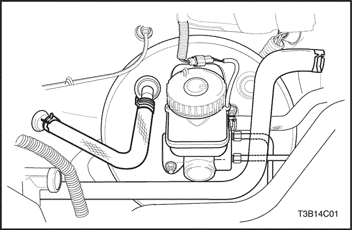
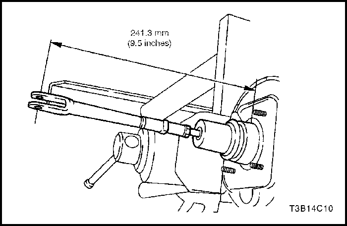
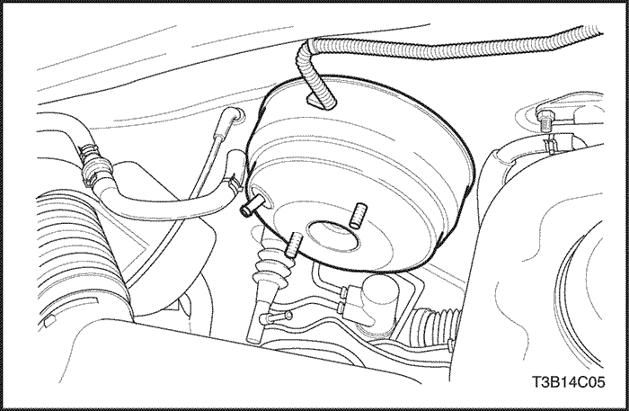
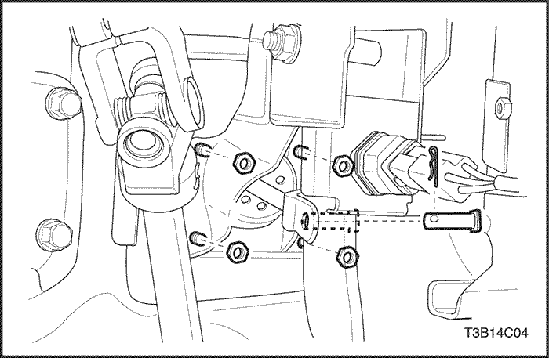
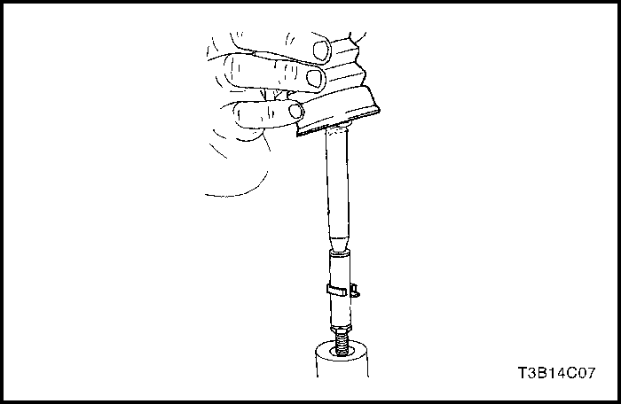
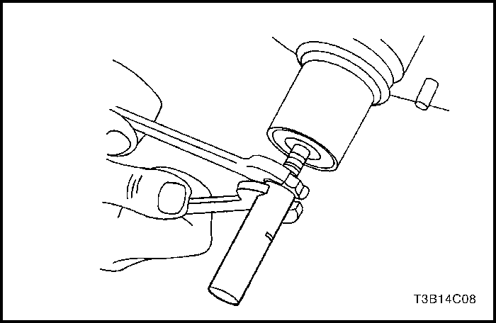
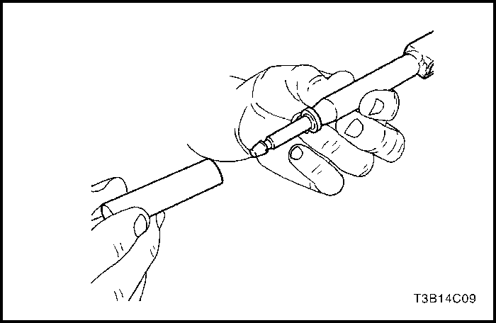
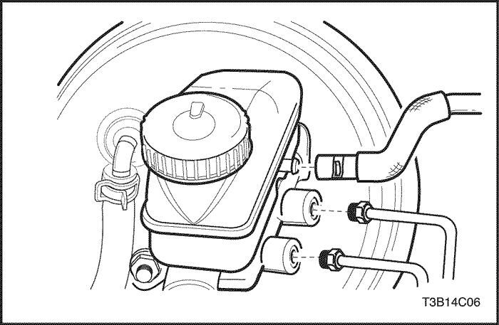
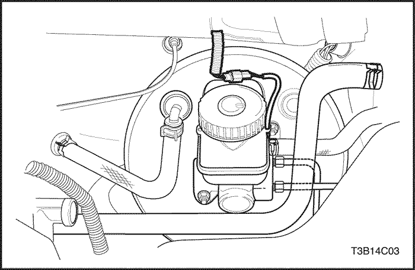

SECCIÓN 4C
SERVOFRENO
ESPECIFICACIONES
Especificaciones de apriete de la sujeción
|
Aplicación
|
N•m
|
Árbol de transmisión izquierdo
|
Articulación
|
|
Tuercas de fijación del servofreno y el soporte al tablero
|
24
|
18
|
-
|
|
Tuerca hexagonal de la varilla de empuje del servofreno
|
16
|
12
|
-
|
|
Tuercas del servofreno al soporte
|
12
|
9
|
-
|
|
Tuercas de fijación del cilindro maestro
|
24
|
18
|
-
|
DIAGNÓSTICO
Comprobación funcional del sobrealimentador de potencia
- Con el motor apagado, elimine el vacío en el servofreno pisando el pedal de freno varias veces.
- Pise el pedal a fondo y manténgalo en esta posición.
- Ponga el motor en marcha.
- El servofreno funciona bien si el pedal baja aún más, debido a la fuerza adicional que se produce.
- Si el pedal de freno no baja, es probable que haya una avería en el sistema de vacío (manguitos de vacío, válvula de retención, etc.) y debe comprobarse el sistema.
- Si no se descubre ningún defecto durante la comprobación del sistema, la anomalía reside en el propio servofreno.
MANTENIMIENTO Y REPARACIÓN
servicio con vehículo en marcha



manguera de vacío
Procedimiento de desmontaje
- En vehículos con motor DOHC, retire el clip de la conexión del manguito de vacío en el colector de admisión.
- Extraiga el manguito de la conexión por racor. Si el manguito no se desprende fácilmente o está deteriorado, haga palanca para desmontarlo y deséchelo.
- En vehículos con motor SOHC, retire de forma similar el clip de la conexión por racor del manguito de vacío en el colector de admisión.
- Extraiga el manguito de la conexión por racor. Si el manguito no puede desprenderse fácilmente o está deteriorado, haga palanca para desmontarlo y deséchelo.
- Retire los clips de la conexión del manguito de vacío al servofreno.
- Retire el manguito de vacío.
procedimiento de montaje
- Monte el manguito de vacío (la ilustración muestra la conexión del motor DOHC) y asegúrese de que las conexiones están apretadas en cada extremo.
- Coloque los clips del manguito de vacío.
- Compruebe el funcionamiento del servofreno. Consulte el apartado "Comprobación funcional del servofreno" de esta sección.

Conjunto de sobrealimentador de potencia
Procedimiento de desmontaje
- Desenchufe el conector eléctrico del depósito.

- En vehículos con caja de cambios manual, desconecte el clip de la conexión del manguito del embrague al cilindro maestro.
- Tape el manguito del embrague y el cilindro maestro para que no salga líquido.
- Quite las tuercas de fijación del cilindro maestro.
- Empuje ligeramente el cilindro maestro hacia delante y apártelo.
- Retire el retén del alojamiento del servofreno y deséchelo.
- Retire el clip de la conexión del manguito de vacío al servofreno (la ilustración muestra la conexión del motor DOHC).
- Desconecte el interruptor de las luces de freno.
- Retire el muelle del pedal del freno.
- Desconecte el clip y el pasador de la varilla de empuje del conjunto del soporte del pedal. Consulte la Sección 4A, Frenos hidráulicos.

- Desmonte el servofreno y quite las tuercas del soporte al tablero.
- Desmonte el servofreno y el conjunto del soporte del tablero.
- Quite del servofreno las tuercas del soporte y desmonte el servofreno.

- Quite el guardapolvo de goma y la retención.

- Desmonte la varilla de empuje.
- Retire el manguito de ajuste de la varilla de empuje.
- Quite la tuerca hexagonal.

procedimiento de montaje
- Compruebe si la varilla de empuje y el manguito de ajuste están bien instalados o si están dañados.
- Coloque la tuerca hexagonal y el manguito de ajuste en el servofreno.
Apretar
Apriete la tuerca hexagonal de la varilla de empuje del servofreno y el manguito de ajuste hasta 16 N•m (12 lb-pie).
- Inserte la varilla de empuje en el manguito de ajuste y coloque la retención.
- Mida la cota desde el centro del taladro de la horquilla hasta el servofreno.
- Coloque el guardapolvo de goma en el servofreno.
- Monte los soportes en el servofreno.
Apretar
Apriete las tuercas del servofreno al soporte hasta 12 N•m (9 lb-pie).
- Monte el servofreno y el conjunto del soporte al tablero.
Apretar
Apriete las tuercas del servofreno y del soporte al tablero hasta 24 N•m (18 lb-pie).

- Conecte el cilindro maestro al servofreno y coloque un nuevo retén para el alojamiento del servofreno.
Apretar
Apriete las tuercas de fijación del cilindro maestro hasta 18 N•m (13 lb-pie).

- Monte el manguito de vacío nuevo en el servofreno (la ilustración muestra la conexión del motor DOHC). Consulte el apartado "Manguito de vacío" de esta sección.
- Coloque abrazaderas nuevas en el manguito de vacío.
- Coloque el pasador de la varilla de empuje en el conjunto del soporte del pedal del freno y conecte el clip y el muelle. Consulte la Sección 4A, Frenos hidráulicos.
- Monte el interruptor de las luces de freno.
DESCRIPCIÓN GENERAL Y FUNCIONAMIENTO DEL SISTEMA
Sobrealimentador de potencia
Este servofreno es una unidad accionada - por vacío de un solo diafragma. En un modo de funcionamiento normal, sin aplicar los frenos de servicio, el servofreno accionado por - vacío actúa con el vacío existente a los dos lados de su diafragma.
Cuando se aplican los frenos, la presión atmosférica actúa en uno de los lados de dicho diafragma para proporcionar la servoasistencia. Cuando se liberan los frenos, se corta la actuación de la presión atmosférica desde ese lado del diafragma. En ese momento, la fuente de vacío aspira el aire del servofreno a través de la válvula antirretorno de vacío.
Importante: Si se desmonta o se desconecta cualquier componente del sistema hidráulico, puede resultar necesario tener que purgar la totalidad o una parte del sistema de frenos.